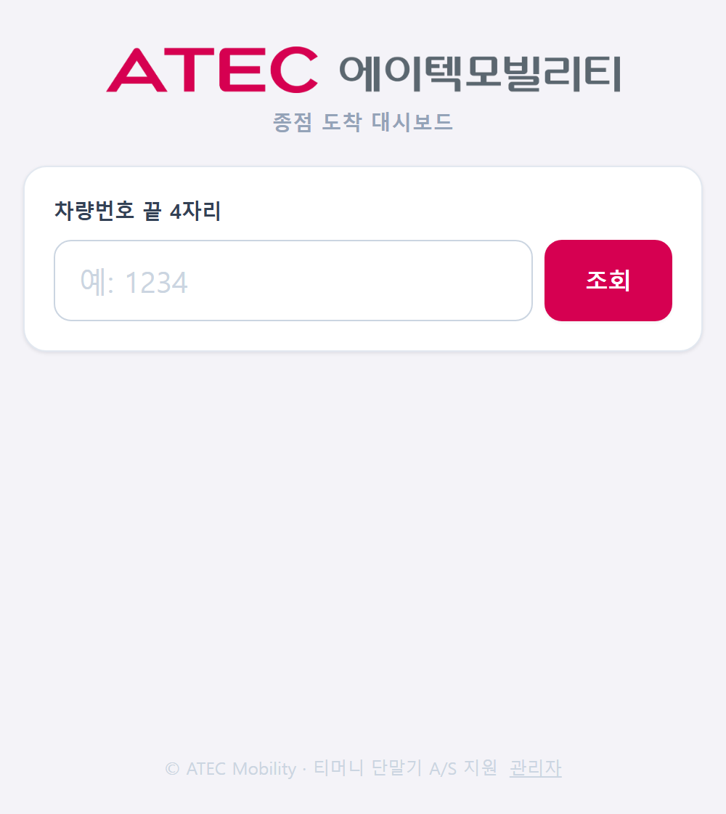
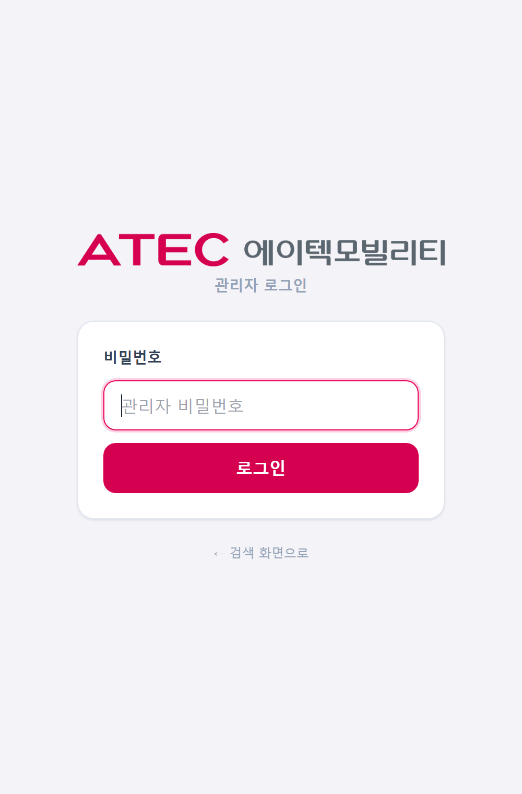

차량번호 끝 4자리만 입력하면, 그 버스가 종점에 언제 도착하는지를 현장 A/S 기사가 즉시 확인할 수 있는 모바일 웹 도구입니다.
티머니 버스단말기 A/S는 차량이 종점(차고지)에 들어와 있을 때 가장 효율적으로 처리됩니다. 문제는 "그 차가 지금 어디쯤 오고 있는지"를 기사가 알 방법이 없었다는 점입니다.
단말기 점검·교체는 운행 중 차량에는 불가능. 종점 도착 타이밍을 놓치면 기사가 차고지에서 무작정 대기해야 했습니다.
"몇 시쯤 들어와요?"를 운수사 배차실에 전화로 묻거나, 감으로 기다리는 방식에 의존했습니다.
차량·노선 정보는 사내 단말기버전 엑셀(약 4.6만 행)에, 실시간 위치는 공공 버스 API에 따로 존재했습니다.
단순히 화면을 만드는 것을 넘어, 데이터를 잇는 과정에서 여러 난관이 있었습니다.
엑셀 4.6만 행은 단말기 단위라 한 차량이 여러 번 등장했습니다. 차량번호 기준으로 정리해 고유차량 9,575대 / 고유노선 658개로 압축했습니다.
"서울75사8915" 같은 차량번호를 API 값과 1:1로 맞추기 어려워, 끝자리 기반 매칭으로 기사가 끝 4자리만 입력해도 후보 차량을 찾도록 했습니다.
엑셀에는 "종점이 몇 번째 정류장인지(last_seq)"가 없었습니다. 이게 없으면 도착 시간을 계산할 수 없어 노선정보 API로 별도 수집이 필요했습니다.
data.go.kr → 서울 TOPIS로의 인증키 전파 지연, 사내망에서 HTTPS 차단(HTTP만 응답) 등 외부 환경 제약을 코드(HTTP 폴백 등)로 우회해야 했습니다.
한 번의 검색으로 끝나는 단순한 흐름으로 설계했습니다.
기사가 휴대폰으로 숫자만 입력합니다. 외울 것도, 로그인할 것도 없습니다.
Supabase에 적재된 차량·노선 데이터에서 끝자리가 일치하는 차량을 찾아 노선·차고지와 함께 보여줍니다.
매칭된 차량의 현재 구간순번(어느 정류장 구간을 지나는지)을 실시간으로 가져옵니다.
남은 정류장 수 × 정류장당 평균 소요시간으로 "약 12분 / 곧 도착 / 종점 도착"을 큰 글씨로 안내합니다.
설치·로그인 없이 휴대폰 브라우저에서 바로 쓰는 모바일 화면입니다.

메인 — 차량번호 조회끝 4자리만 입력하면 끝

관리자 — 비밀번호 보호차량 정보 검색·수정·추가
현장 대기 시간을 줄이고, A/S 처리 효율과 데이터 신뢰도를 함께 끌어올립니다.
종점 도착 타이밍을 미리 알 수 있어, 차고지 대기와 운행 중 차량 헛방문을 줄입니다.
도착 임박 차량 순서대로 동선을 짤 수 있어, 같은 시간에 더 많은 단말기를 점검·교체할 수 있습니다.
설치·로그인 없이 모바일 웹으로 접속. 홈 화면 추가(PWA)로 앱처럼 쓸 수 있습니다.
흩어진 차량 데이터를 한곳에 모으고, 관리자 페이지에서 차량 정보를 직접 검색·수정·추가할 수 있습니다.